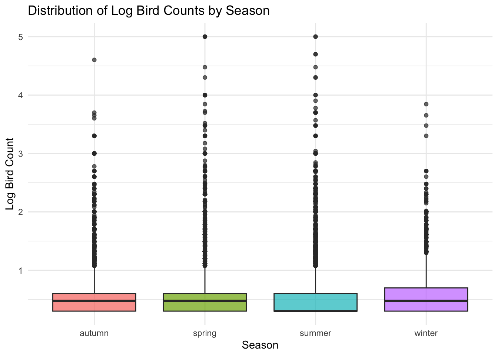
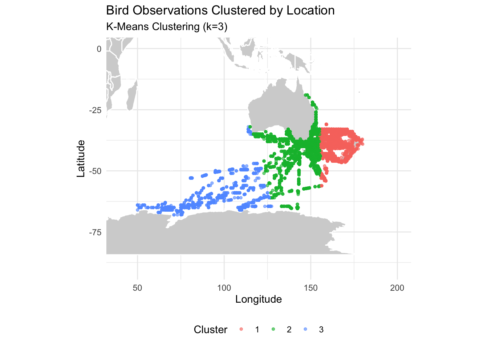
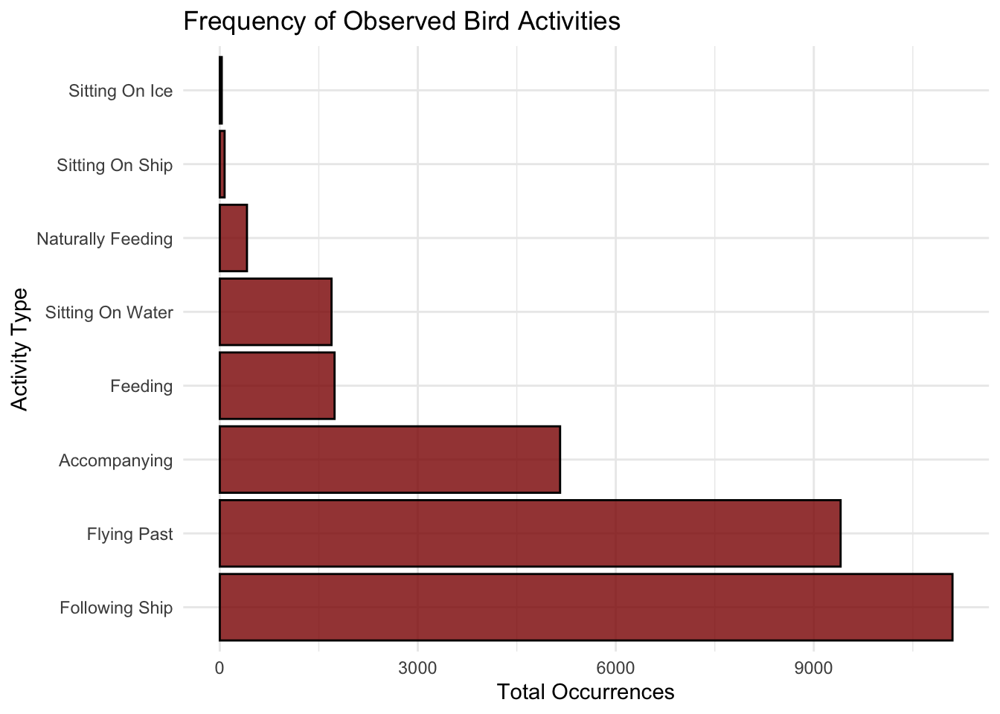
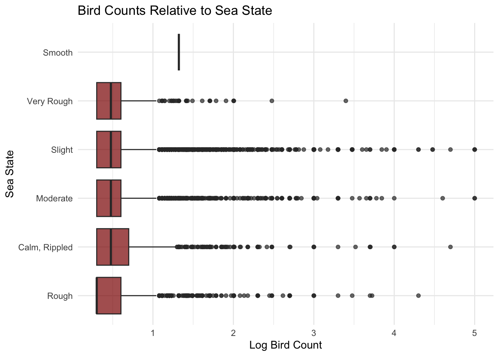

tuesdata <- tidytuesdayR::tt_load('2026-04-14')
beaufort_scale <- tuesdata$beaufort_scale
birds <- tuesdata$birds
sea_states <- tuesdata$sea_states
ships <- tuesdata$shipsBird Sightings at Sea
An Exploratory Data Analysis
Exploring the data
We are looking at bird sightings at sea, which comes from TidyTuesday at https://github.com/rfordatascience/tidytuesday/tree/main/data/2026/2026-04-14. Each observation communicates the data that an observer witnessed during a 10-minute period at a port.
library(tidyverse) # for general purposes and ggplot
library(gtsummary) # for nice tables
library(maps) # for plotting latitude and longitude # merge ship and sea data
ships <- ships %>%
left_join(beaufort_scale, by = "wind_speed_class") %>%
left_join(sea_states, by = "sea_state_class") %>%
mutate(date = as.Date(date),
year = year(date),
month = month(date))
# merge birds with ship and sea data
df <- birds %>%
left_join(ships, by = "record_id")# species column has a LOT of species that are observed very few times. going to make a new variable that collapses rare ones into one "other" column
df_clean <- df_clean %>%
group_by(species_common_name) %>%
mutate(species_count = n()) %>%
ungroup() %>%
mutate(species_simplified = case_when(
species_count/nrow(df_clean) >= 0.01 ~ species_common_name,
TRUE ~ "other"
)) %>%
select(-species_count)
# this still has a lot of unique birds. it may be better to do family level
df_clean <- df_clean %>%
mutate(species_family = case_when(
str_detect(species_common_name, "albatross|mollymawk") ~ "Albatross",
str_detect(species_common_name, "petrel|shearwater|prion|fulmar|diving-petrel") ~ "Petrel/Shearwater/Prion",
str_detect(species_common_name, "gull|tern|noddy") ~ "Gull/Tern",
str_detect(species_common_name, "skua|jaeger") ~ "Skua/Jaeger",
str_detect(species_common_name, "penguin") ~ "Penguin",
str_detect(species_common_name, "gannet|booby") ~ "Gannet/Booby",
str_detect(species_common_name, "cormorant|shag") ~ "Cormorant/Shag",
str_detect(species_common_name, "frigatebird|tropicbird") ~ "Frigatebird/Tropicbird",
TRUE ~ "Unidentified/Other"
)) # factoring species so that unidentified comes last
df_clean <- df_clean %>%
mutate(species_family = factor(species_family,
levels = c(
"Albatross",
"Petrel/Shearwater/Prion",
"Gull/Tern",
"Skua/Jaeger",
"Penguin",
"Gannet/Booby",
"Cormorant/Shag",
"Frigatebird/Tropicbird",
"Unidentified/Other"
)))
# print table. selecting our core variables, which are the ones that we are investigating in EDA
df_clean %>%
select(
species_family,
count,
season,
cloud_cover, precipitation,
feeding, flying_past, following_ship,
sea_state_description,
longitude,
latitude
) %>%
mutate(
season = str_to_title(season),
precipitation = str_to_title(precipitation),
cloud_cover = str_to_title(cloud_cover),
sea_state_description = str_to_title(sea_state_description)
) %>%
rename(
"Bird Family" = species_family,
"Bird count" = count,
"Number of birds feeding" = feeding,
"Number of birds flying past" = flying_past,
"Number of birds following ships" = following_ship,
"Cloud cover" = cloud_cover,
"Season" = season,
"Precipitation" = precipitation,
"Sea state" = sea_state_description,
"Longitude" = longitude,
"Latitude" = latitude
) %>%
tbl_summary(
statistic = list(
all_continuous() ~ "{mean} ({sd})",
all_categorical() ~ "{n} ({p}%)"
),
missing = "ifany"
) %>%
as_gt() %>%
gt::tab_caption("Table 1. Summary of bird observations")| Characteristic | N = 23,3821 |
|---|---|
| Bird Family | |
| Albatross | 10,419 (45%) |
| Petrel/Shearwater/Prion | 9,638 (41%) |
| Gull/Tern | 1,022 (4.4%) |
| Skua/Jaeger | 453 (1.9%) |
| Penguin | 43 (0.2%) |
| Gannet/Booby | 580 (2.5%) |
| Cormorant/Shag | 25 (0.1%) |
| Frigatebird/Tropicbird | 32 (0.1%) |
| Unidentified/Other | 1,170 (5.0%) |
| Bird count | 51.9 (1,616.5) |
| Season | |
| Autumn | 4,683 (20%) |
| Spring | 6,894 (29%) |
| Summer | 7,027 (30%) |
| Winter | 4,778 (20%) |
| Cloud cover | |
| Clear | 3,978 (17%) |
| Overcast | 6,373 (27%) |
| Partially Cloudy | 13,031 (56%) |
| Precipitation | |
| Continuous Snow | 26 (0.1%) |
| Drizzle | 39 (0.2%) |
| Fog | 175 (0.7%) |
| None | 20,208 (86%) |
| Rain | 373 (1.6%) |
| Showers | 1,918 (8.2%) |
| Snow Showers | 101 (0.4%) |
| Squalls | 542 (2.3%) |
| Number of birds feeding | 1,739 (7.4%) |
| Number of birds flying past | 9,406 (40%) |
| Number of birds following ships | 11,101 (47%) |
| Sea state | |
| Calm, Rippled | 1,484 (6.3%) |
| Moderate | 7,858 (34%) |
| Rough | 4,028 (17%) |
| Slight | 9,231 (39%) |
| Smooth | 1 (<0.1%) |
| Very Rough | 780 (3.3%) |
| Longitude | 152 (18) |
| Latitude | -40 (7) |
| 1 n (%); Mean (SD) | |
Our key outcome variable currently is bird count, which measures how many total birds an observer witnessed during an observation session. We are secondarily interested in looking at counts of birds doing specific activities, such as feeding, flying past, and following ships. Our key explanatory variables are season, longitude, latitude, precipitation, cloud cover, and sea state. We expect that the number of birds will vary dramatically depending on the season and location, but that poor weather will also affect bird count at a more granular level.
Data Wrangling and Transformation
We wrangled the data via the base R object tt_load, which allows us to directly load TidyTuesday data from Github. We merged the separate data frames by the TidyTuesday-recommend identifier columns recommended to form a data frame with 49019 observations of 54 variables.
As for data cleaning, we chose to exclude some observations and variables with missing data to ensure that our exploratory assessments were not distorted by data that would need to be removed for modeling purposes. We first removed any observations that were missing our core variables: bird count, species common name, latitude, longitude, year, and month. Next, we performed an iterative process of removing columns and observations with missing data; we removed variables with more than 60% of observations missing, then observations with more than 60% of variables missing, then variables with more than 20% of observations missing, and, finally, observations with any missing data. This iterative process allowed us to retain 23382 observations and 39 variables.
We created a new variable that categorized birds by family rather than species because most individual species were observed very few times, but overall families were observed frequently.
Data Visualization
# take log count of birds
df_clean <- df_clean %>%
mutate(log_count = log10(count + 1))
# boxplot of log count by season
season_box <- ggplot(df_clean, aes(x = season, y = log_count, fill = season)) +
geom_boxplot(alpha = 0.7) +
theme_minimal() +
labs(title = "Distribution of Log Bird Counts by Season",
x = "Season",
y = "Log Bird Count") +
theme(legend.position = "none")
print(season_box)
### perform k-means clustering
set.seed(244) # for reproducibility
## first, use the elbow method to find the optimal 'k'
# set possible values of k (picked 10 randomly)
k_values <- 1:10
# create a function to compute the Total Within-Cluster Sum of Squares (WCSS)
# for a given k
get_wcss <- function(k) {
kmeans_model <- kmeans(df_clean %>% select(longitude, latitude), centers = k,
nstart = 25)
return(kmeans_model$tot.withinss)
}
# apply function to the range of k values
set.seed(244) # set seed for reproducibility
wcss_values <- map_dbl(k_values, get_wcss)
# store the results in a new dataframe
elbow_df <- tibble(
k = k_values,
wcss = wcss_values
)
# plot the elbow curve plot. commented this out because we don't
# want it to print for our EDA
# ggplot(elbow_df, aes(x = k, y = wcss)) +
# geom_line() +
# geom_point() +
# scale_x_continuous(breaks = k_values) + # force x-axis to show whole numbers
# theme_minimal() +
# labs(title = "Elbow Method for Optimal 'k'",
# x = "Number of Clusters (k)",
# y = "Total Within-Cluster Sum of Squares (WCSS)")
# it looks like three clusters is probably satisfactory
## now, do the k-means clustering
kmeans_result <- kmeans(df_clean %>% select(longitude, latitude),
centers = 3, nstart = 25)
# add the cluster assignments back to the dataset
df_clean$cluster <- as.factor(kmeans_result$cluster)
# visualize the clusters on a map via maps package
world_map <- map_data("world")
# now plot the cluster results
ggplot() +
# draw the world map
geom_polygon(data = world_map, aes(x = long, y = lat, group = group),
fill = "lightgray", color = "white") +
# plot the clustered observations
geom_point(data = df_clean, aes(x = longitude, y = latitude, color = cluster),
alpha = 0.6, size = 1) +
coord_quickmap(xlim = c(40, 200), ylim = c(-90, 0)) + # zooming map in to
# just australia-ish area
theme_minimal() +
labs(title = "Bird Observations Clustered by Location",
subtitle = "K-Means Clustering (k=3)",
x = "Longitude",
y = "Latitude",
color = "Cluster") +
theme(legend.position = "bottom")
# defining activity columns
activity_cols <- c("feeding", "sitting_on_water", "sitting_on_ice", "sitting_on_ship",
"in_hand", "flying_past", "accompanying", "following_ship", "naturally_feeding")
# reshape data from wide to long format to summarize activities, and make the activities more nicely formatted for the plot
df_activities <- df_clean %>%
select(all_of(activity_cols)) %>%
pivot_longer(cols = everything(), names_to = "activity_type", values_to = "is_doing") %>%
# filter only the TRUE observations
filter(is_doing == TRUE) %>%
mutate(
activity_type = str_replace_all(activity_type, "_", " "), # replace underscores with spaces
activity_type = str_to_title(activity_type) # capitalize first letters
)
# plot the frequency of each activity
ggplot(df_activities, aes(x = fct_infreq(activity_type))) +
geom_bar(fill = "red4", color = "black", alpha = 0.8) +
coord_flip() + # flip coordinates for easier reading of labels
theme_minimal() +
labs(title = "Frequency of Observed Bird Activities",
x = "Activity Type",
y = "Total Occurrences")
df_sea_state <- df_clean %>%
mutate(
# capitalize the first letter of each word
sea_state_description = str_to_title(sea_state_description)
)
# boxplot of log count by sea state
sea_state_box <- ggplot(df_sea_state,
aes(x = reorder(sea_state_description, log_count, FUN = median), y = log_count)) +
geom_boxplot(fill = "red4", alpha = 0.7) +
coord_flip() +
theme_minimal() +
labs(title = "Bird Counts Relative to Sea State",
x = "Sea State",
y = "Log Bird Count")
print(sea_state_box)